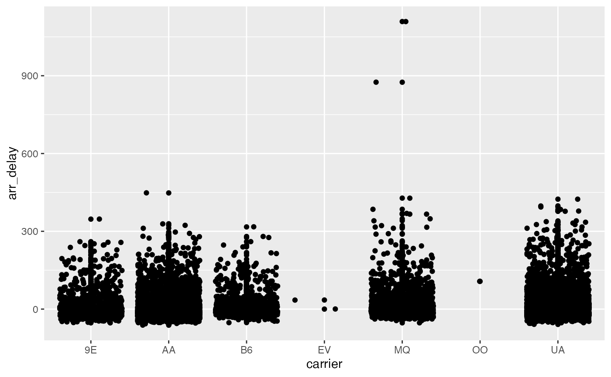

Advanced Spatial Transcriptomics Data Science
Stephanie Hicks
adv-spatial-01.RmdOverview
As the number of computational and statistical methods for the analysis single-cell and spatial transcriptomics continue to increase, you will find that they will be implemented in many languages. Often Python is the language of choice. Python is incredibly powerful and I increasingly interact with it on very frequent basis these days. To be able to leverage the single-cell and spatial software tools implemented in Python, today I am giving an overview of using Python from the perspective of an R user.
Happy coding!
Key resources
- Workshop material: pkgdown website
- Code: GitHub
Python for R Users
Learning objectives
- Install python on your local machine
- Learn about the
reticulatepackage to work interoperability between Python and R - Be able to translate between R and Python objects
Overview
For this lesson, we will be using the reticulate R
package, which provides a set of tools for interoperability between
Python and R. The package includes facilities for:
Calling Python from R in a variety of ways including R Markdown, sourcing Python scripts, importing Python modules, and using Python interactively within an R session.
Translation between R and Python objects (for example, between R and Pandas data frames, or between R matrices and NumPy arrays).

reticulate R package logo
[Source: Rstudio]
Install python
Installing python: If you would like recommendations on installing python, I like this resource: https://py-pkgs.org/02-setup#installing-python or using conda environments with mini-forge!
What’s happening under the hood?:
reticulate embeds a Python session within your R session,
enabling seamless, high-performance interoperability.
If you are an R developer that uses Python for some of your work or a
member of data science team that uses both languages,
reticulate can make your life better!
Install reticulate
Let’s try it out. Before we get started, you will need to install the packages, if not already:
install.package("reticulate")We will also load the here and tidyverse
packages for our lesson:
python path
If python is not installed on your computer, you can use the
install_python() function from reticulate to
install it.
If python is already installed, by default, reticulate
uses the version of Python found on your PATH
Sys.which("python3")## python3
## "/opt/homebrew/Caskroom/miniforge/base/bin/python3"The use_python() function enables you to specify an
alternate version, for example:
use_python("/usr/<new>/<path>/local/bin/python")For example, I can define the path explicitly:
use_python("/opt/homebrew/Caskroom/miniforge/base/bin/python", required = TRUE)You can confirm that reticulate is using the correct
version of python that you requested:
## python: /opt/homebrew/Caskroom/miniforge/base/bin/python
## libpython: /opt/homebrew/Caskroom/miniforge/base/lib/libpython3.9.dylib
## pythonhome: /opt/homebrew/Caskroom/miniforge/base:/opt/homebrew/Caskroom/miniforge/base
## version: 3.9.10 | packaged by conda-forge | (main, Feb 1 2022, 21:27:43) [Clang 11.1.0 ]
## numpy: /opt/homebrew/Caskroom/miniforge/base/lib/python3.9/site-packages/numpy
## numpy_version: 1.23.0
##
## NOTE: Python version was forced by use_python functionCalling Python in R
There are a variety of ways to integrate Python code into your R projects:
Python in R Markdown — A new Python language engine for R Markdown that supports bi-directional communication between R and Python (R chunks can access Python objects and vice-versa).
Importing Python modules — The
import()function enables you to import any Python module and call its functions directly from R.Sourcing Python scripts — The
source_python()function enables you to source a Python script the same way you wouldsource()an R script (Python functions and objects defined within the script become directly available to the R session).Python REPL — The
repl_python()function creates an interactive Python console within R. Objects you create within Python are available to your R session (and vice-versa).
Below I will focus on introducing the first and last one. However, before we do that, let’s introduce a bit about python basics.
Python basics
Python is a high-level, object-oriented programming language useful to know for anyone analyzing data. The most important thing to know before learning Python, is that in Python, everything is an object. There is no compiling and no need to define the type of variables before using them. No need to allocate memory for variables. The code is very easy to learn and easy to read (syntax).
There is a large scientific community contributing to Python. Some of
the most widely used libraries in Python are numpy,
scipy, pandas, and
matplotlib.
start python
There are two modes you can write Python code in: interactive
mode or script mode. If you open up a UNIX
command window and have a command-line interface, you can simply type
python (or python3) in the shell:
python3and the interactive mode will open up. You can write code in the interactive mode and Python will interpret the code using the python interpreter.
Another way to pass code to Python is to store code in a file ending
in .py, and execute the file in the script
mode using
python3 myscript.pyTo check what version of Python you are using, type the following in the shell:
python3 --versionPython engine within R Markdown
The reticulate package includes a Python engine for R
Markdown with the following features:
Run Python chunks in a single Python session embedded within your R session (shared variables/state between Python chunks)
Printing of Python output, including graphical output from
matplotlib.Access to objects created within Python chunks from R using the
pyobject (e.g.py$xwould access anxvariable created within Python from R).Access to objects created within R chunks from Python using the
robject (e.g.r.xwould access toxvariable created within R from Python)
Built in conversion for many Python object types is provided, including NumPy arrays and Pandas data frames.
From Python to R
As an example, you can use Pandas to read and manipulate data then
easily plot the Pandas data frame using ggplot2:
Let’s first create a flights.csv dataset in R:
# checks to see if a folder called "data" exists; if not, it installs it
if(!file.exists(here("data"))){
dir.create(here("data"))
}
# checks to see if a file called "flights.csv" exists; if not, it saves it to the data folder
if(!file.exists(here("data", "flights.csv"))){
readr::write_csv(nycflights13::flights,
file = here("data", "flights.csv"))
}
nycflights13::flights %>%
head()## # A tibble: 6 × 19
## year month day dep_time sched_dep_time dep_delay arr_time sched_arr_time
## <int> <int> <int> <int> <int> <dbl> <int> <int>
## 1 2013 1 1 517 515 2 830 819
## 2 2013 1 1 533 529 4 850 830
## 3 2013 1 1 542 540 2 923 850
## 4 2013 1 1 544 545 -1 1004 1022
## 5 2013 1 1 554 600 -6 812 837
## 6 2013 1 1 554 558 -4 740 728
## # … with 11 more variables: arr_delay <dbl>, carrier <chr>, flight <int>,
## # tailnum <chr>, origin <chr>, dest <chr>, air_time <dbl>, distance <dbl>,
## # hour <dbl>, minute <dbl>, time_hour <dttm>Use Python to read in the file and do some data wrangling
import pandas
flights_path = "/Users/stephaniehicks/Documents/github/teaching/cshlgsd2022/data/flights.csv"
flights = pandas.read_csv(flights_path)
flights = flights[flights['dest'] == "ORD"]
flights = flights[['carrier', 'dep_delay', 'arr_delay']]
flights = flights.dropna()
flights## carrier dep_delay arr_delay
## 5 UA -4.0 12.0
## 9 AA -2.0 8.0
## 25 MQ 8.0 32.0
## 38 AA -1.0 14.0
## 57 AA -4.0 4.0
## ... ... ... ...
## 336645 AA -12.0 -37.0
## 336669 UA -7.0 -13.0
## 336675 MQ -7.0 -11.0
## 336696 B6 -5.0 -23.0
## 336709 AA -13.0 -38.0
##
## [16566 rows x 3 columns]
head(py$flights)## carrier dep_delay arr_delay
## 5 UA -4 12
## 9 AA -2 8
## 25 MQ 8 32
## 38 AA -1 14
## 57 AA -4 4
## 70 UA 9 20
py$flights_path ## [1] "/Users/stephaniehicks/Documents/github/teaching/cshlgsd2022/data/flights.csv"
class(py$flights)## [1] "data.frame"
class(py$flights_path)## [1] "character"Next, we can use R to visualize the Pandas DataFrame.
The data frame is loaded in as an R object now stored in the variable
py.
ggplot(py$flights, aes(x = carrier, y = arr_delay)) +
geom_point() +
geom_jitter()
Note that the reticulate Python engine is enabled by
default within R Markdown whenever reticulate is
installed.
From R to Python
Use R to read and manipulate data
library(tidyverse)
flights <- read_csv(here("data","flights.csv")) %>%
filter(dest == "ORD") %>%
select(carrier, dep_delay, arr_delay) %>%
na.omit()
flights## # A tibble: 16,566 × 3
## carrier dep_delay arr_delay
## <chr> <dbl> <dbl>
## 1 UA -4 12
## 2 AA -2 8
## 3 MQ 8 32
## 4 AA -1 14
## 5 AA -4 4
## 6 UA 9 20
## 7 UA 2 21
## 8 AA -6 -12
## 9 MQ 39 49
## 10 B6 -2 15
## # … with 16,556 more rowsUse Python to print R dataframe
If you recall, we can access objects created within R chunks from
Python using the r object (e.g. r.x would
access to x variable created within R from Python). We can
then ask for the first ten rows using the head() function
in python.
r.flights.head(10)## carrier dep_delay arr_delay
## 0 UA -4.0 12.0
## 1 AA -2.0 8.0
## 2 MQ 8.0 32.0
## 3 AA -1.0 14.0
## 4 AA -4.0 4.0
## 5 UA 9.0 20.0
## 6 UA 2.0 21.0
## 7 AA -6.0 -12.0
## 8 MQ 39.0 49.0
## 9 B6 -2.0 15.0import python modules
You can use the import() function to import any Python
module and call it from R. For example, this code imports the Python
os module in python and calls the listdir()
function:
os <- import("os")
os$listdir(".")## [1] ".Rhistory" "intro-single-cell-01.Rmd"
## [3] "intro-single-cell-02.Rmd" "adv-spatial-01.Rmd"
## [5] "intro-spatial-01.Rmd" ".DS_Store"
## [7] "cshlgsd2022.Rmd" "figures"
## [9] "adv-single-cell-01.Rmd"Functions and other data within Python modules and classes can be
accessed via the $ operator (analogous to the way you would
interact with an R list, environment, or reference class).
Imported Python modules support code completion and inline help:

Using reticulate tab completion
[Source: Rstudio]
Similarly, we can import the pandas library:
## year month day dep_time sched_dep_time dep_delay arr_time sched_arr_time
## 1 2013 1 1 517 515 2 830 819
## 2 2013 1 1 533 529 4 850 830
## 3 2013 1 1 542 540 2 923 850
## 4 2013 1 1 544 545 -1 1004 1022
## 5 2013 1 1 554 600 -6 812 837
## 6 2013 1 1 554 558 -4 740 728
## arr_delay carrier flight tailnum origin dest air_time distance hour minute
## 1 11 UA 1545 N14228 EWR IAH 227 1400 5 15
## 2 20 UA 1714 N24211 LGA IAH 227 1416 5 29
## 3 33 AA 1141 N619AA JFK MIA 160 1089 5 40
## 4 -18 B6 725 N804JB JFK BQN 183 1576 5 45
## 5 -25 DL 461 N668DN LGA ATL 116 762 6 0
## 6 12 UA 1696 N39463 EWR ORD 150 719 5 58
## time_hour
## 1 2013-01-01T10:00:00Z
## 2 2013-01-01T10:00:00Z
## 3 2013-01-01T10:00:00Z
## 4 2013-01-01T10:00:00Z
## 5 2013-01-01T11:00:00Z
## 6 2013-01-01T10:00:00Z
class(test)## [1] "data.frame"or the scikit-learn python library:
skl_lr <- import("sklearn.linear_model")
skl_lr## Module(sklearn.linear_model)Calling python scripts
source_python("secret_functions.py")
subject_1 <- read_subject("secret_data.csv")Calling the python repl
If you want to work with Python interactively you can call the
repl_python() function, which provides a Python REPL
embedded within your R session.
Objects created within the Python REPL can be accessed from R using
the py object exported from reticulate. For
example:

Using the repl_python() function
[Source: Rstudio]
i.e. objects do have permenancy in R after exiting the python repl.
So typing x = 4 in the repl will put py$x
as 4 in R after you exit the repl.
Enter exit within the Python REPL to return to the R prompt.
Session Info
## R version 4.2.1 (2022-06-23)
## Platform: aarch64-apple-darwin21.5.0 (64-bit)
## Running under: macOS Monterey 12.4
##
## Matrix products: default
## BLAS: /opt/homebrew/Cellar/openblas/0.3.20/lib/libopenblasp-r0.3.20.dylib
## LAPACK: /opt/homebrew/Cellar/r/4.2.1/lib/R/lib/libRlapack.dylib
##
## locale:
## [1] en_US.UTF-8/en_US.UTF-8/en_US.UTF-8/C/en_US.UTF-8/en_US.UTF-8
##
## attached base packages:
## [1] stats graphics grDevices utils datasets methods base
##
## other attached packages:
## [1] reticulate_1.25 forcats_0.5.1 stringr_1.4.0 dplyr_1.0.9
## [5] purrr_0.3.4 readr_2.1.2 tidyr_1.2.0 tibble_3.1.7
## [9] ggplot2_3.3.6 tidyverse_1.3.1 here_1.0.1
##
## loaded via a namespace (and not attached):
## [1] httr_1.4.3 sass_0.4.1 bit64_4.0.5 vroom_1.5.7
## [5] jsonlite_1.8.0 modelr_0.1.8 bslib_0.3.1 assertthat_0.2.1
## [9] highr_0.9 cellranger_1.1.0 yaml_2.3.5 nycflights13_1.0.2
## [13] pillar_1.7.0 backports_1.4.1 lattice_0.20-45 glue_1.6.2
## [17] digest_0.6.29 rvest_1.0.2 colorspace_2.0-3 htmltools_0.5.2
## [21] Matrix_1.4-1 pkgconfig_2.0.3 broom_1.0.0 haven_2.5.0
## [25] scales_1.2.0 tzdb_0.3.0 generics_0.1.3 farver_2.1.0
## [29] ellipsis_0.3.2 cachem_1.0.6 withr_2.5.0 cli_3.3.0
## [33] magrittr_2.0.3 crayon_1.5.1 readxl_1.4.0 memoise_2.0.1
## [37] evaluate_0.15 fs_1.5.2 fansi_1.0.3 xml2_1.3.3
## [41] textshaping_0.3.6 tools_4.2.1 hms_1.1.1 lifecycle_1.0.1
## [45] munsell_0.5.0 reprex_2.0.1 compiler_4.2.1 pkgdown_2.0.5
## [49] jquerylib_0.1.4 systemfonts_1.0.4 rlang_1.0.3 grid_4.2.1
## [53] rstudioapi_0.13 labeling_0.4.2 rmarkdown_2.14 gtable_0.3.0
## [57] DBI_1.1.3 R6_2.5.1 lubridate_1.8.0 knitr_1.39
## [61] fastmap_1.1.0 bit_4.0.4 utf8_1.2.2 rprojroot_2.0.3
## [65] ragg_1.2.2 desc_1.4.1 stringi_1.7.6 parallel_4.2.1
## [69] Rcpp_1.0.8.3 vctrs_0.4.1 png_0.1-7 dbplyr_2.2.1
## [73] tidyselect_1.1.2 xfun_0.31